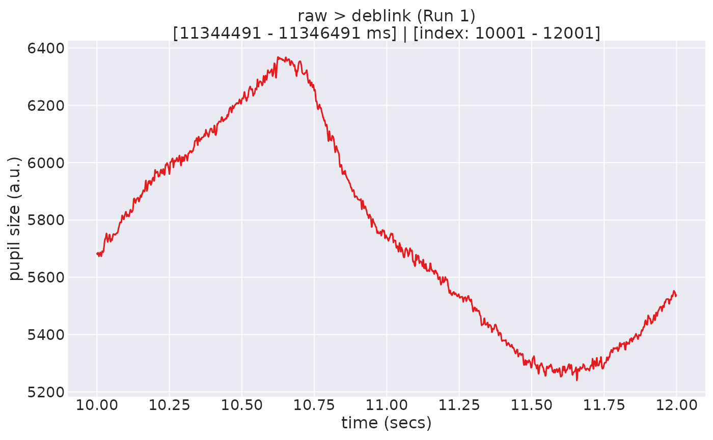
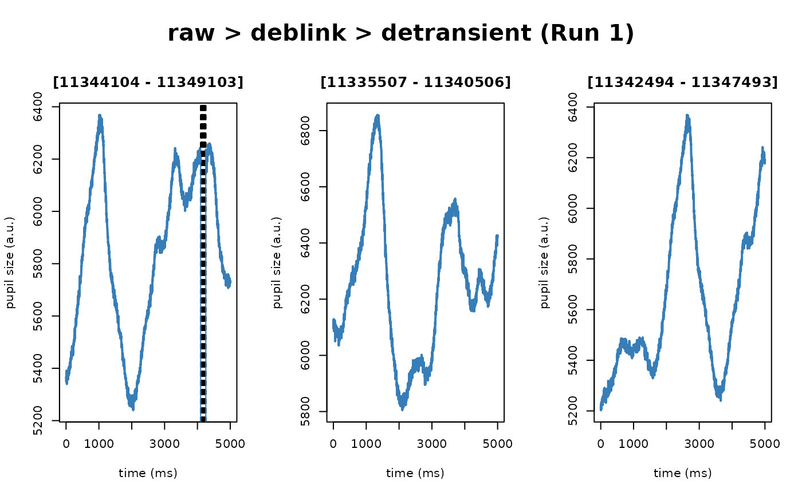
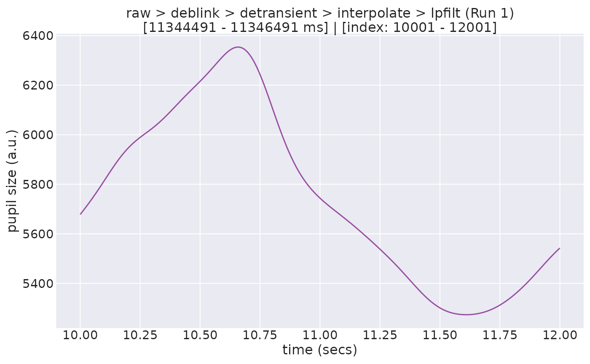
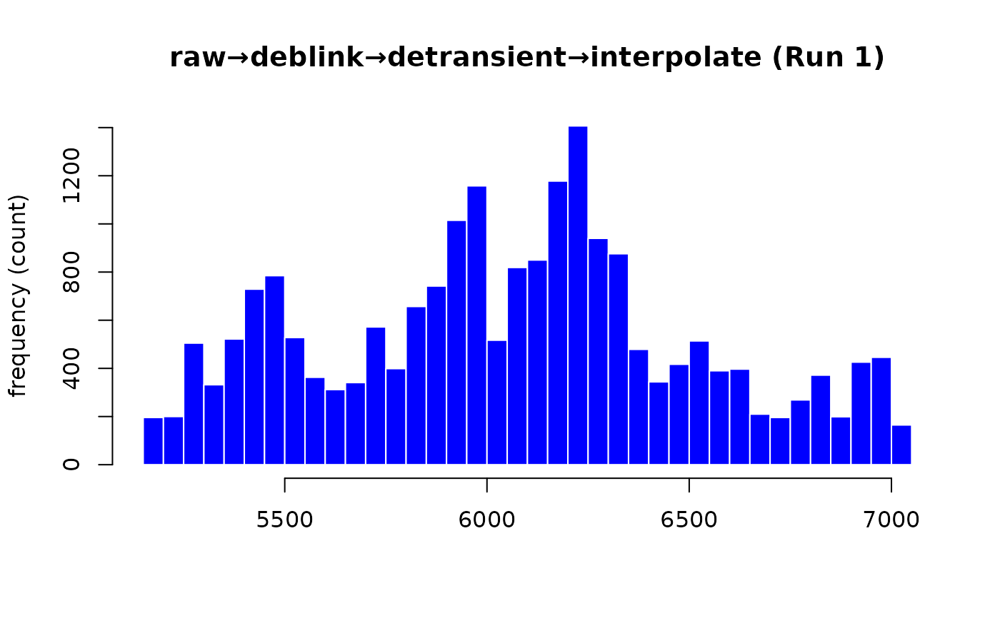
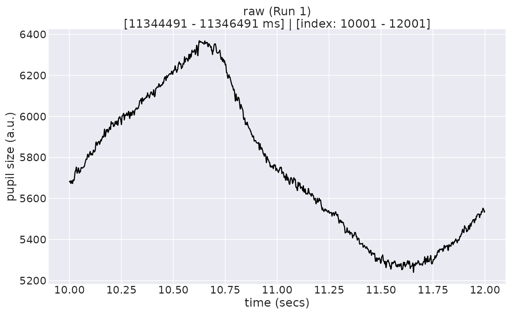
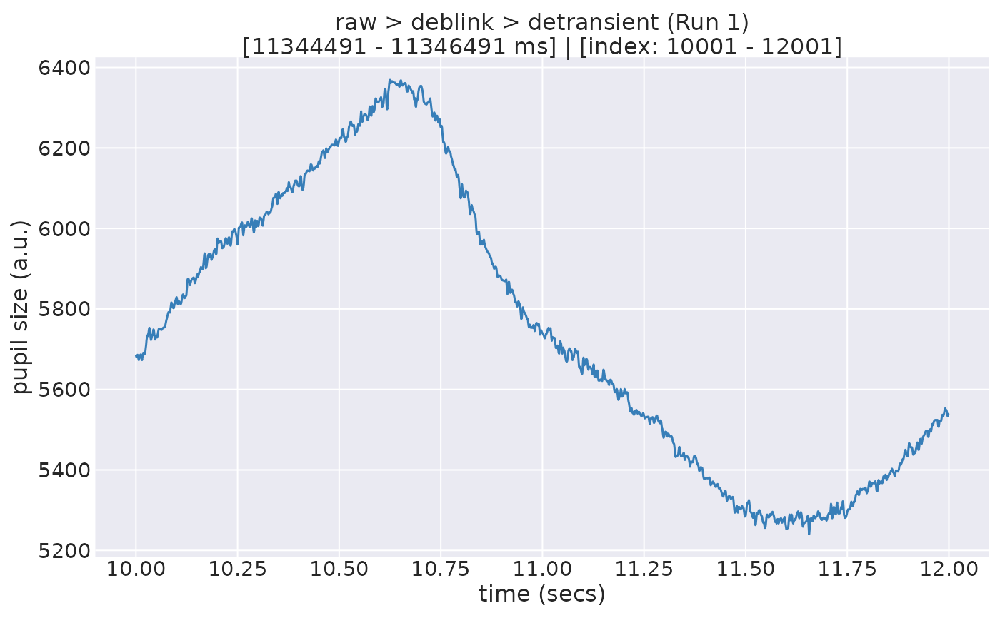
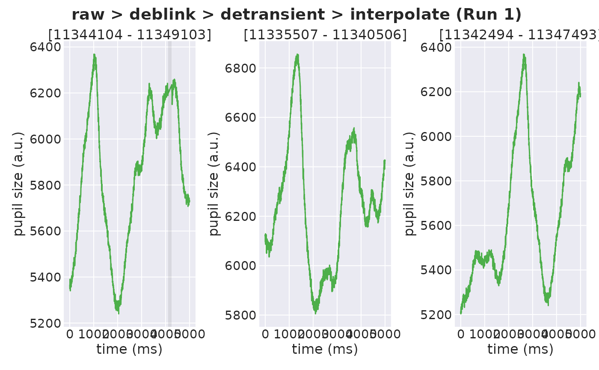
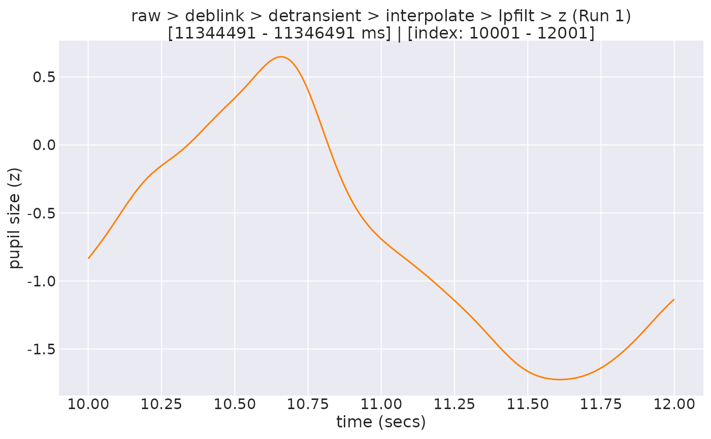

Linear interpolation of time series data. The intended use of this method
is for filling in missing pupil samples (NAs) in the time series. This method
uses "na.approx()" function from the zoo package, which implements linear
interpolation using the "approx()" function from the stats package.
Currently, NAs at the beginning and the end of the data are replaced with
values on either end, respectively, using the "rule = 2" argument in the
approx() function.
Arguments
- eyeris
An object of class
eyerisderived fromload_asc()- max_gap_ms
The maximum duration (in milliseconds) of a gap of missing (
NA) pupil samples that will be interpolated. Gaps longer than this threshold are left asNA(not interpolated). Must be greater than0; defaults to250ms, the value recommended by Kret & Sjak-Shie (2018). Set toInf(orNULL) to interpolate across all gaps regardless of duration. The threshold is converted to a whole number of samples (rounded down) using each recording's sampling rate. To skip interpolation entirely, setinterpolate = FALSEinglassbox()instead- verbose
A flag to indicate whether to print detailed logging messages. Defaults to
TRUE. Set toFALSEto suppress messages about the current processing step and run silently- call_info
A list of call information and parameters. If not provided, it will be generated from the function call
Details
By default, only gaps shorter than or equal to max_gap_ms milliseconds are
interpolated. Any gap longer than this threshold is left as NA rather than
being interpolated over. This follows the recommendation of Kret &
Sjak-Shie (2018) to avoid interpolating across long stretches of missing
data, where linear interpolation is unlikely to reflect the true underlying
pupil signal. The default of 250 ms matches the value used in that paper.
Set max_gap_ms = Inf (or NULL) to disable the limit and interpolate
across all gaps, restoring the behavior of eyeris versions <= 3.2.0.
Downstream glassbox() steps that cannot operate on missing data (low-pass
filtering, downsampling, and binning) automatically work around these
retained gaps – filtering/resampling over a temporarily filled copy and
then restoring the gaps as NA – so the gaps are preserved through to the
final preprocessed output. Because of this temporary fill, the filtering
steps (lpfilt() and the anti-aliasing filter in downsample()) can
slightly bias the valid samples immediately adjacent to a long retained gap
toward the interpolated values. These steps therefore emit a warning when
they operate over such gaps, so you can choose to disable them (e.g.
lpfilt = FALSE and/or downsample = FALSE in glassbox()) if this bias is
a concern for your analysis.
Note: Prior to eyeris version 3.3.0, all gaps were interpolated
regardless of duration. Enforcing max_gap_ms is a change in default
behavior and may affect downstream results.
This function is automatically called by glassbox() by default. Use
glassbox(interpolate = FALSE) to disable this step as needed.
Users should prefer using glassbox() rather than invoking this function
directly unless they have a specific reason to customize the pipeline
manually.
Note
This function is part of the glassbox() preprocessing pipeline and is not
intended for direct use in most cases. Use glassbox(interpolate = TRUE),
or provide parameters via glassbox(interpolate = list(max_gap_ms = ...)).
Advanced users may call it directly if needed.
References
Kret, M. E., & Sjak-Shie, E. E. (2018). Preprocessing pupil size data: Guidelines and code. Behavior Research Methods, 51(3), 1336-1342. doi:10.3758/s13428-018-1075-y
See also
glassbox() for the recommended way to run this step as
part of the full eyeris glassbox preprocessing pipeline.
For a complete, end-to-end reference pipeline that demonstrates how all
eyeris preprocessing functions are chained together in practice, see the
"Building Blocks Under the Hood" section of the Anatomy of an eyeris
Object vignette — vignette("anatomy", package = "eyeris") — as
well as the Complete Pupillometry Pipeline Walkthrough vignette:
vignette("complete-pipeline", package = "eyeris").
Examples
demo_data <- eyelink_asc_demo_dataset()
demo_data |>
# set to FALSE to skip (not recommended)
eyeris::glassbox(interpolate = TRUE) |>
plot(seed = 0)
#> ✔ [2026-07-19 05:51:08] [OKAY] Running eyeris::load_asc()
#> ✔ [2026-07-19 05:51:08] [OKAY] Running eyeris::resample()
#> ℹ [2026-07-19 05:51:08] [INFO] Processing block: block_1
#> ✔ [2026-07-19 05:51:08] [OKAY] Running eyeris::deblink() for block_1
#> ✔ [2026-07-19 05:51:08] [OKAY] Running eyeris::detransient() for block_1
#> ✔ [2026-07-19 05:51:08] [OKAY] Running eyeris::interpolate() for block_1
#> ! [2026-07-19 05:51:08] [WARN] Interpolation now leaves gaps longer than 250 ms
#> as `NA` instead of interpolating across them (following Kret & Sjak-Shie,
#> 2018). This is a change in default behavior from eyeris <= 3.2.0 and may affect
#> your results. To restore the previous behavior, set `interpolate =
#> list(max_gap_ms = Inf)` in `glassbox()` (or `max_gap_ms = Inf` in
#> `interpolate()`).
#> ✔ [2026-07-19 05:51:08] [OKAY] Running eyeris::lpfilt() for block_1
#> ! [2026-07-19 05:51:08] [WARN] Skipping eyeris::downsample() for block_1
#> ! [2026-07-19 05:51:08] [WARN] Skipping eyeris::bin() for block_1
#> ! [2026-07-19 05:51:08] [WARN] Skipping eyeris::detrend() for block_1
#> ✔ [2026-07-19 05:51:08] [OKAY] Running eyeris::zscore() for block_1
#> ℹ [2026-07-19 05:51:08] [INFO] Block processing summary:
#> ℹ [2026-07-19 05:51:08] [INFO] block_1: OK (steps: 6, latest:
#> pupil_raw_deblink_detransient_interpolate_lpfilt_z)
#> ✔ [2026-07-19 05:51:08] [OKAY] Running eyeris::summarize_confounds()
#> ℹ [2026-07-19 05:51:08] [INFO] Plotting block 1 with sampling rate 1000 Hz from
#> possible blocks: 1





 # only interpolate gaps up to 100 ms; leave longer gaps as NA
demo_data |>
eyeris::glassbox(interpolate = list(max_gap_ms = 100)) |>
plot(seed = 0)
#> ✔ [2026-07-19 05:51:11] [OKAY] Running eyeris::load_asc()
#> ✔ [2026-07-19 05:51:11] [OKAY] Running eyeris::resample()
#> ℹ [2026-07-19 05:51:11] [INFO] Processing block: block_1
#> ✔ [2026-07-19 05:51:11] [OKAY] Running eyeris::deblink() for block_1
#> ✔ [2026-07-19 05:51:11] [OKAY] Running eyeris::detransient() for block_1
#> ✔ [2026-07-19 05:51:11] [OKAY] Running eyeris::interpolate() for block_1
#> ! [2026-07-19 05:51:11] [WARN] Interpolation now leaves gaps longer than 100 ms
#> as `NA` instead of interpolating across them (following Kret & Sjak-Shie,
#> 2018). This is a change in default behavior from eyeris <= 3.2.0 and may affect
#> your results. To restore the previous behavior, set `interpolate =
#> list(max_gap_ms = Inf)` in `glassbox()` (or `max_gap_ms = Inf` in
#> `interpolate()`).
#> ! [2026-07-19 05:51:11] [WARN] Left 156 sample(s) as NA across gaps longer than
#> 100 ms (not interpolated).
#> ✔ [2026-07-19 05:51:11] [OKAY] Running eyeris::lpfilt() for block_1
#> ! [2026-07-19 05:51:11] [WARN] `lpfilt()` is operating on data that contains
#> gaps longer than the interpolation limit (`max_gap_ms`), which were left as
#> `NA`. These gaps are temporarily filled so the filter can run and then masked
#> back to `NA`; this can slightly bias the valid pupil samples immediately
#> adjacent to each gap toward the interpolated values. If this bias is a concern
#> for your analysis, consider disabling filtering and/or downsampling (e.g.
#> `lpfilt = FALSE` and/or `downsample = FALSE` in `glassbox()`).
# only interpolate gaps up to 100 ms; leave longer gaps as NA
demo_data |>
eyeris::glassbox(interpolate = list(max_gap_ms = 100)) |>
plot(seed = 0)
#> ✔ [2026-07-19 05:51:11] [OKAY] Running eyeris::load_asc()
#> ✔ [2026-07-19 05:51:11] [OKAY] Running eyeris::resample()
#> ℹ [2026-07-19 05:51:11] [INFO] Processing block: block_1
#> ✔ [2026-07-19 05:51:11] [OKAY] Running eyeris::deblink() for block_1
#> ✔ [2026-07-19 05:51:11] [OKAY] Running eyeris::detransient() for block_1
#> ✔ [2026-07-19 05:51:11] [OKAY] Running eyeris::interpolate() for block_1
#> ! [2026-07-19 05:51:11] [WARN] Interpolation now leaves gaps longer than 100 ms
#> as `NA` instead of interpolating across them (following Kret & Sjak-Shie,
#> 2018). This is a change in default behavior from eyeris <= 3.2.0 and may affect
#> your results. To restore the previous behavior, set `interpolate =
#> list(max_gap_ms = Inf)` in `glassbox()` (or `max_gap_ms = Inf` in
#> `interpolate()`).
#> ! [2026-07-19 05:51:11] [WARN] Left 156 sample(s) as NA across gaps longer than
#> 100 ms (not interpolated).
#> ✔ [2026-07-19 05:51:11] [OKAY] Running eyeris::lpfilt() for block_1
#> ! [2026-07-19 05:51:11] [WARN] `lpfilt()` is operating on data that contains
#> gaps longer than the interpolation limit (`max_gap_ms`), which were left as
#> `NA`. These gaps are temporarily filled so the filter can run and then masked
#> back to `NA`; this can slightly bias the valid pupil samples immediately
#> adjacent to each gap toward the interpolated values. If this bias is a concern
#> for your analysis, consider disabling filtering and/or downsampling (e.g.
#> `lpfilt = FALSE` and/or `downsample = FALSE` in `glassbox()`).

#> ! [2026-07-19 05:51:11] [WARN] Skipping eyeris::downsample() for block_1
#> ! [2026-07-19 05:51:11] [WARN] Skipping eyeris::bin() for block_1
#> ! [2026-07-19 05:51:11] [WARN] Skipping eyeris::detrend() for block_1
#> ✔ [2026-07-19 05:51:11] [OKAY] Running eyeris::zscore() for block_1
#> ℹ [2026-07-19 05:51:11] [INFO] Block processing summary:
#> ℹ [2026-07-19 05:51:11] [INFO] block_1: OK (steps: 6, latest:
#> pupil_raw_deblink_detransient_interpolate_lpfilt_z)
#> ✔ [2026-07-19 05:51:11] [OKAY] Running eyeris::summarize_confounds()
#> ℹ [2026-07-19 05:51:11] [INFO] Plotting block 1 with sampling rate 1000 Hz from
#> possible blocks: 1





